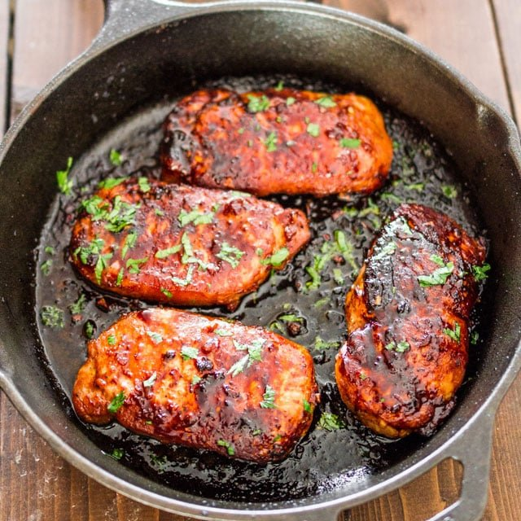

Korean Style Pork Chops

Description:
A simple recipe for Korean style marinated pork chops, resulting in melt
in your mouth, super delicious pork chops.
Ingredients
- 4 pork chops
- 1Tbs olive oil
- 1/4 cup soy sauce
- 2Tbs honey
- 4 cloves garlic minced
- 1 teaspoon sesame oil
- 1 teaspoon ginger minced
- 2 teaspoon sriracha sauce
- black pepper to taste
Steps
- Preheat the oven to 400°F.
-
In a medium size bowl whisk together the soy sauce, honey, garlic,
ginger, sesame oil and sriracha sauce. Pour over pork chops and let
marinade for about 20 minutes
-
Heat the olive oil in a large skillet for medium high heat. Add pork
chops, without marinade, and cook for about 5 minutes for the first
side, or until it gets a nice brownish color. Flip the pork chops and
pour the remaining marinade over them. Cook another 5 min on this side.
-
Place the skillet in the oven to finish cooking them. Roast for about 10
minutes, or until pork chops are completely cooked through.